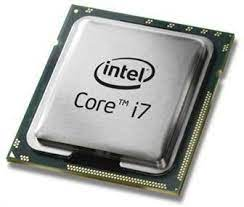

ตัวประมวลผลคอมพิวเตอร์ทำงานร่วมกับส่วนประกอบฮาร์ดแวร์และโปรแกรมซอฟต์แวร์อื่น ๆ
เพื่อประมวลผลข้อมูลและจัดการการไหลของข้อมูลภายในอุปกรณ์อิเล็กทรอนิกส์
คำสั่งเหล่านี้มักจะทำงานเป็นวงจร กับแต่ละรอบคำสั่งที่เป็นตัวแทนของสามขั้นตอนหลัก